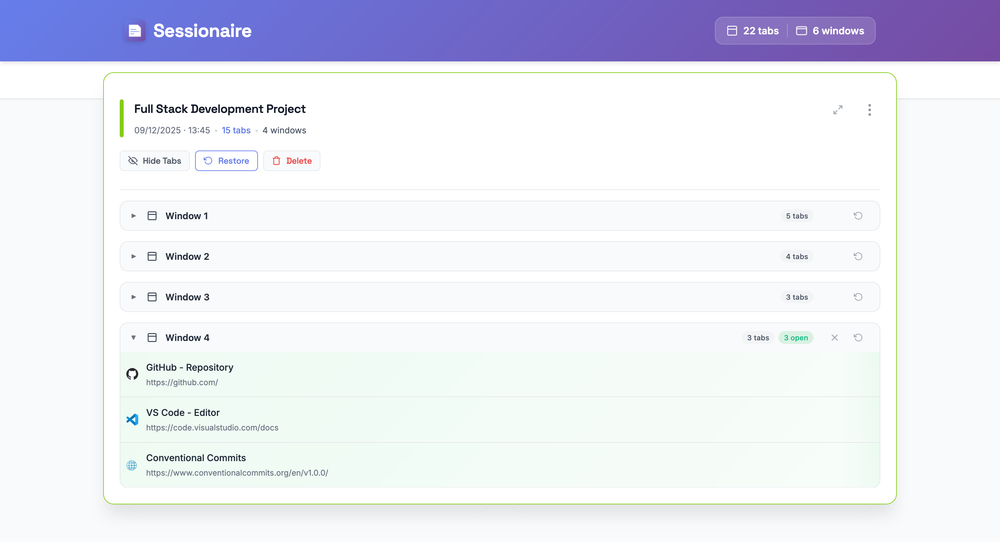
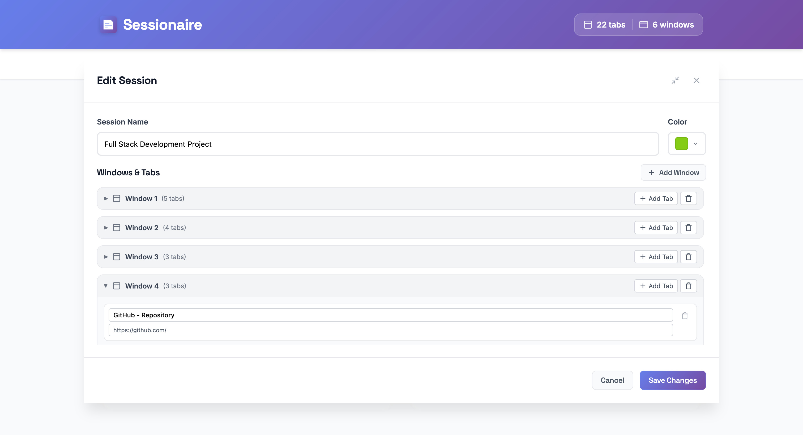
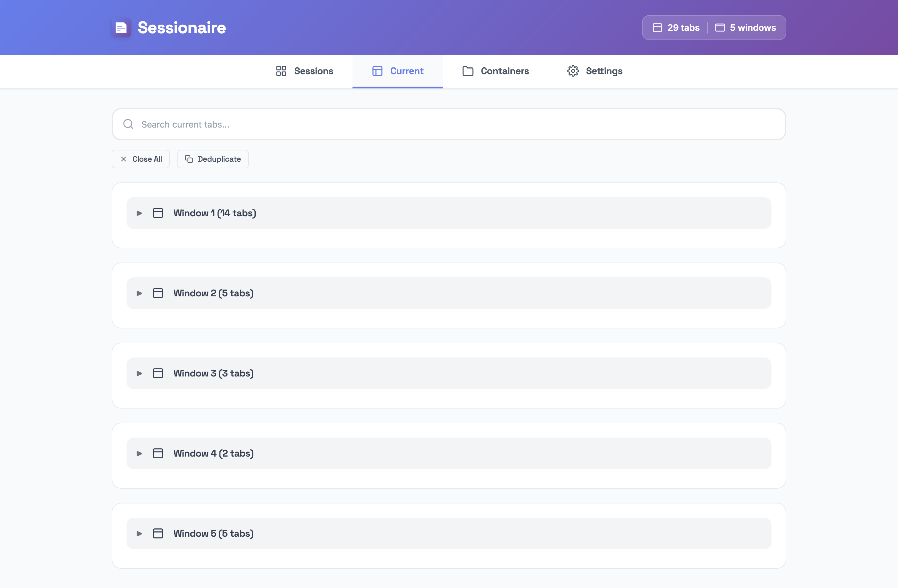
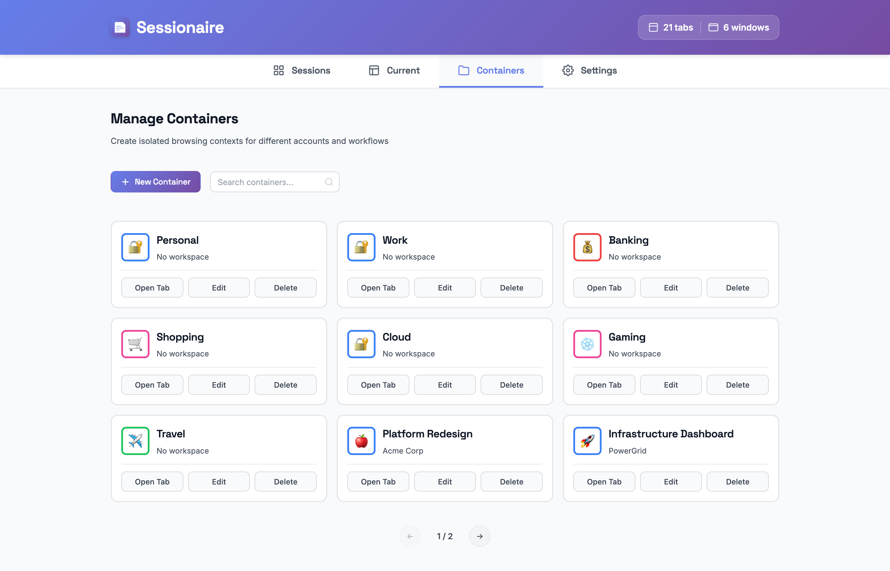
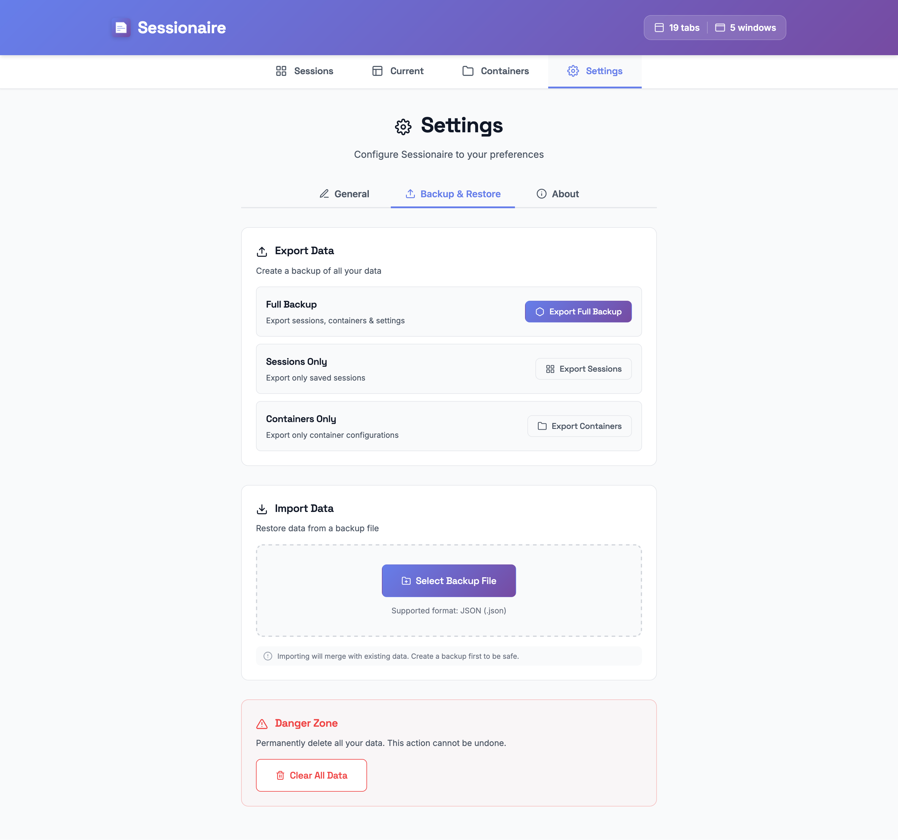
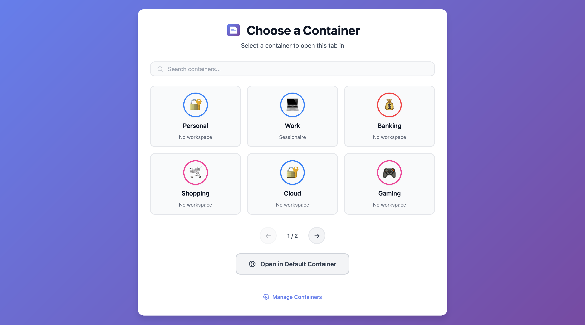
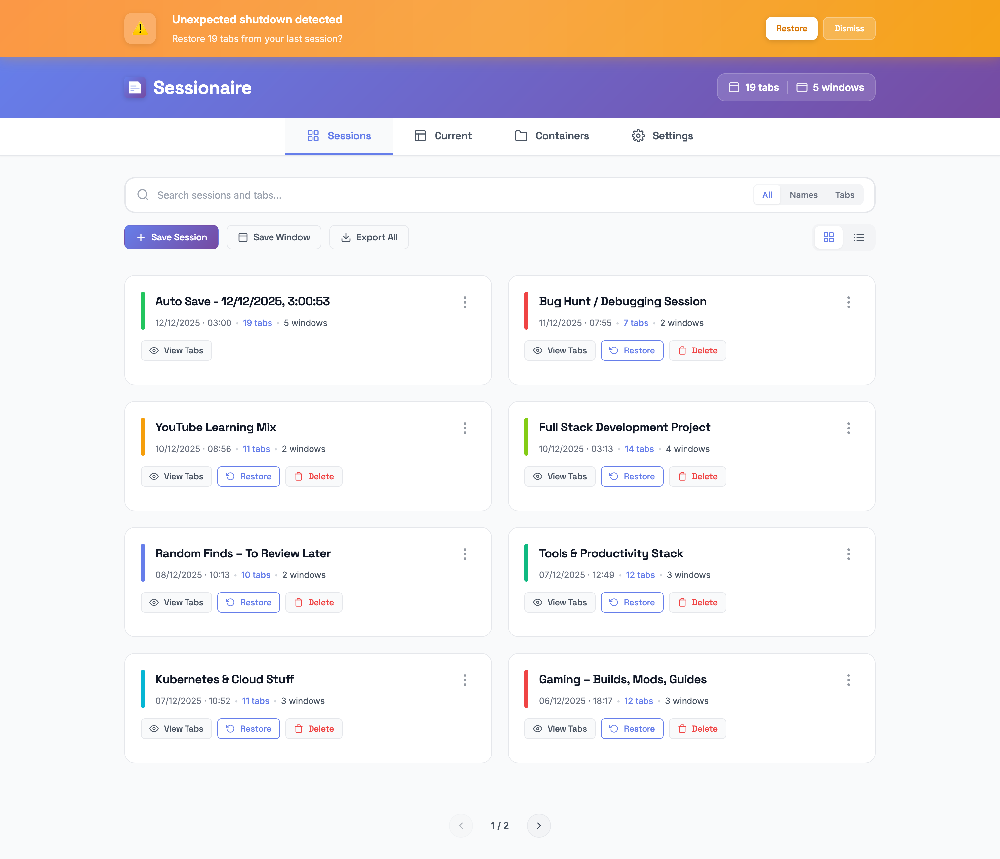

See It in Action
Explore Sessionaire's beautiful interface designed for seamless productivity and ease of use.

Sessions Dashboard
Save, restore, and manage all your browser sessions

Session Details
Expand any session to see all windows and tabs at a glance

Edit Sessions
Rename sessions, add or remove tabs before restoring

Current Tabs
View all open windows and tabs at a glance

Container Management
Organize browsing with isolated containers

Settings & Preferences
Auto-save, crash recovery, and startup options

Backup & Restore
Export and import your data in JSON format

Container Selector
Choose a container when opening new tabs

Crash Recovery
Never lose your tabs again — instant recovery after crashes